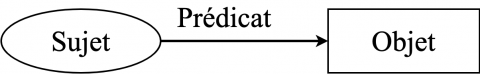
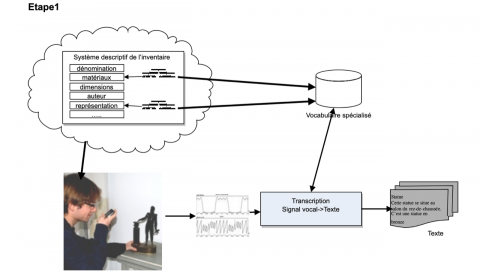
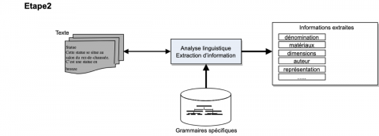
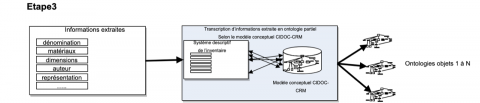
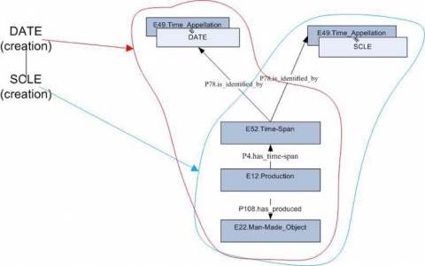
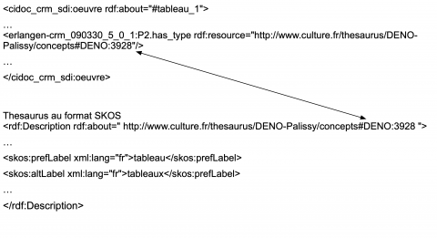
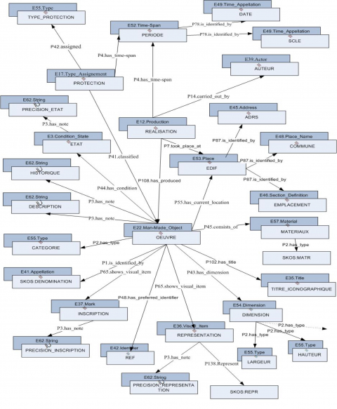
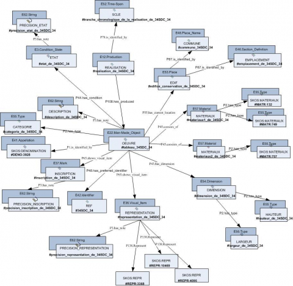
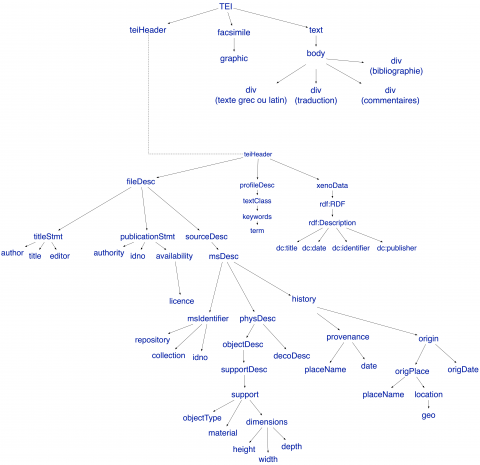

1Le développement rapide des technologies (capacité de stockage, rapidité des traitements, rapidité des transferts), appuyé par des initiatives institutionnelles pour la numérisation du patrimoine dans le domaine des sciences humaines et sociales (numérisations massives et ouverture des données [Domange 2013]), a considérablement modifié les usages et notre approche de ce nouvel univers. Les sciences humaines et sociales utilisent de plus en plus les technologies numériques. Un programme de financement de la recherche et de l’innovation de l’Union européenne pour la période 2014-20201, nommé « Horizon 2020 », a été en partie consacré aux nouvelles technologies et aux sciences humaines et sociales.
2Une dynamique s’est installée entre ces technologies et les usagers ; de nouvelles propositions d’usages venant des utilisateurs amènent des évolutions et incitent à la création de nouveaux dispositifs numériques qui, à leur tour, fécondent l’imaginaire et créent de nouveaux besoins. Cette interconnexion entre les sciences humaines et sociales et les technologies numériques porte désormais le nom d’« humanités numériques » (Dacos et Mounier 2014).
3À côté de pratiques et réalisations traditionnelles, telles que la description d’œuvres à l’aide de fiches et de mots-clés inscrits dans des bases de données relationnelles, de nouvelles tendances – numérisation massive des collections, mise en réseau de bases existantes, création de portails thématiques, génération d’atlas numériques géolocalisés, développement de modèles 3D – produisent une grande quantité de données. Face à cette masse considérable de données, d’informations et de connaissances offertes à l’homme ou créées par lui, la logique « papier » et les bases de données relationnelles sont désormais totalement insuffisantes. Une autre logique s’impose – celle qui appréhende comment les utilisateurs vont pouvoir ou vouloir exploiter cette richesse, sans en connaître nécessairement le contenu. Le paradigme à mettre en place est celui du Web sémantique, un monde ouvert, qui par opposition au monde fermé des bases de données traditionnelles, permet l’exploration intelligente des données, des interconnexions sans interventions humaines, des inférences.
4Les initiatives visant la numérisation du patrimoine culturel dans un souci de partage et d’interconnexion intelligente des données sont de plus en plus nombreuses. Nous pouvons mentionner dans ce contexte la création et l’utilisation d’ontologies appliquées aux œuvres du patrimoine culturel. Il est important de souligner, dans ces réalisations, l’utilisation à différents niveaux des technologies du Web sémantique : OWL, RDF, RDF(S), SPARQL, ou encore vocabulaires au format SKOS2.
5Dans la suite de cet article, nous développerons les problématiques de gestion des connaissances dans le domaine du patrimoine culturel, d’utilisation des ontologies et de l’alignement ontologique.
6Après un état de l’art (partie 2), nous présenterons la méthode que nous avons utilisée (partie 3), suivie de la nature des connaissances dans le domaine du patrimoine culturel (partie 4), et enfin nous évoquerons l’utilisation des ontologies et de l’alignement ontologique (partie 5).
7Ces propos seront illustrés par deux exemples de réalisations :
-
Simplicius, une application qui permet de gérer le cycle complet de la gestion des connaissances (recueil, traitement, utilisation) en patrimoine culturel. C’est un système hybride qui s’appuie à la fois sur les techniques de traitement du signal, le traitement du langage naturel et la modélisation des connaissances.
-
Ricis, une application de valorisation des connaissances dans le domaine de l’épigraphie grecque et latine. Elle illustrera un cas particulièrement signifiant d’alignement ontologique.
8Depuis plus de cinquante ans, les chercheurs en intelligence artificielle ont proposé et expérimenté diverses méthodes et techniques pour traiter des connaissances. Des techniques de modélisation des connaissances ont démontré leur utilité en particulier dans le contexte des inférences.
9La modélisation des connaissances est une tâche difficile, voire impossible avec des systèmes d’information traditionnels comme les bases de données relationnelles, dont le schéma et les structures de données sont déterminés par les besoins d’une application particulière. Le modèle reste trop souvent hermétique, rigide et difficile à faire évoluer. Les technologies en question peuvent être efficaces pour rechercher l’information, à condition d’utiliser les descripteurs qui ont servi pour indexer cette information. Il est donc préférable de connaître le contenu de la base avant de l’interroger. Dans le contexte du World Wide Web, ces applications posent le problème de l’interopérabilité et de leur visibilité par des moteurs d’indexation (Bergman 2001). L’utilisation de modèles plus souples, ouverts et interopérables tels que les ontologies sont une réponse aux insuffisances des systèmes du type base de données relationnelles.
10Les principales contributions dans le domaine de la modélisation des connaissances pour le patrimoine culturel et correspondant à nos besoins sont le modèle conceptuel CIDOC-CRM3 (Crofts et al. 2010), SKOS (Simple Knowledge Organization System4), GeoNames (GN5) et Dublin Core6.
11CIDOC-CRM est un modèle conceptuel qui propose un ensemble de classes, de propriétés et de relations qui couvrent toutes les informations requises pour la documentation scientifique du patrimoine culturel.
Le domaine couvert par le CRM peut se définir comme l’ensemble des informations requises pour la documentation scientifique des fonds de patrimoine culturel, afin de permettre à grande échelle l’échange d’informations et l’intégration de ressources hétérogènes (Crofts et al. 2002 ; traduction des auteurs).
12SKOS est un outil « pour représenter des thésaurus, classifications ou d’autres types de vocabulaires contrôlés ou de langues documentaires. S’appuyant sur le modèle de données RDF, son objectif principal est de permettre la publication facile de vocabulaires structurés pour leur utilisation dans le cadre du Web sémantique7 ». GeoNames est une base de données géographiques contenant plus de 7,5 millions de lieux géographiques. Les données de la base sont accessibles gratuitement via Internet, sous une licence Creative Commons. Chaque caractéristique d’un lieu est référencée dans GeoNames en tant que ressource Web et est identifiée par une URI qui offre l’accès à l’ontologie GeoNames au format RDF. Le Dublin Core est un ensemble de quinze propriétés à utiliser dans la description des ressources. Dublin Core a été développé « pour permettre une interopérabilité minimale entre des systèmes conçus indépendamment les uns des autres8 ».
13L’intérêt pour la numérisation du patrimoine culturel, les avancées des technologies de management et la volonté d’ouverture et de partage des connaissances se sont traduits par la réalisation d’un certain nombre de projets qui visent l’interopérabilité et l’accès intelligent aux ressources culturelles numériques. Nous pouvons citer ici plusieurs programmes :
-
STITCH9 permet l’interconnexion des collections des enluminures de la Bibliothèque royale des Pays-Bas avec celles de la Bibliothèque nationale de France.
-
Europeana10 regroupe de très nombreuses institutions européennes afin de fournir un large catalogue de recherche des données du patrimoine culturel.
-
TelPlus11 offre un accès aux ressources de 47 bibliothèques nationales d’Europe ; il est à noter que dans le cadre de ce dernier projet, le répertoire d’autorité-matière encyclopédique et alphabétique unifié RAMEAU12 a été traduit en format RDF-SKOS.
-
Plus récemment, le projet data.bnf.fr13 a pour ambition de fédérer les données de différents catalogues de la Bibliothèque nationale de France, ainsi que certaines ressources disponibles sur le Web.
-
Loebbecke et Thaller (2005) décrivent les initiatives européennes visant à créer des systèmes coopératifs pour la gestion du patrimoine culturel et introduisent les « Digital Autonomous Cultural Objects », une architecture pour accéder à des ressources numérisées.
-
Carugati et al. (2005) proposent un cadre pour le développement de sites Web dans le domaine du patrimoine culturel.
14Depuis l’origine de l’intelligence artificielle, de nombreux chercheurs ont travaillé sur diverses méthodes d’acquisition et de modélisation des connaissances, sur l’analyse linguistique, sur les problématiques du traitement du signal et de compréhension de la parole. À notre connaissance, il n’existe pas de travaux qui intègrent l’utilisation du traitement du signal dans le cycle complet de gestion des connaissances.
15Le premier ordinateur personnel doté d’une interface vocale était Star of Xerox (Baecker et al. 1995). Le poste de travail similaire appelé « Buroviseur », construit à l’INRIA en 1981 (Ellis et Naffah 1987 ; Mercier-Laurent 2011), était sans doute le premier en Europe offrant également une interface vocale. L’interface vocale a été expérimentée pour l’acquisition de connaissances dans les systèmes experts (Balaram 1988) et pour le dialogue homme-machine dans les systèmes d’apprentissage machine (Kaufman et Michalski 1986).
16Les technologies de traitement du langage sont maintenant matures et leur qualité est suffisante pour les applications fonctionnant avec un vocabulaire étendu d’environ 60 000 mots (Haton et al. 2006). Cependant, la qualité des enregistrements dépend de l’environnement acoustique (silencieux ou bruyant), de la qualité de l’appareil de dictée et d’enregistrement ainsi que de la technologie appliquée.
17L’interface conversationnelle développée au laboratoire Heudiasyc (Paraiso et Barthès 2004) illustre le dialogue entre l’homme et un agent assistant cognitif dont le rôle est d’exécuter des tâches plus ou moins complexes commandées oralement par l’utilisateur. Ce système utilise des ontologies pour délimiter et définir précisément le domaine d’application et limiter par la même occasion l’espace de dialogue. Les ontologies ont été utilisées également pour aider à l’interprétation des énoncés et comme aide aux raisonnements.
18Basé sur les algorithmes d’« apprentissage automatique », le système cognitif Watson14, conçu par des chercheurs d’IBM, est capable de comprendre les données, de communiquer avec les utilisateurs et de répondre aux questions posées en langage naturel.
19Aujourd’hui, l’interface vocale est très couramment utilisée, grâce la démocratisation des smartphones, et cela non seulement comme une interface de dictée mais également dans les applications de type dialogue homme-machine.
20Pour concevoir notre système, nous nous inspirons de la méthode proposée par Amidon (2001), et élargie par Mercier-Laurent (2007), qui est une approche globale, systémique et holistique de la résolution des problèmes.
21Globale, car les informations et les connaissances qui se dégagent d’un objet du patrimoine culturel dans un contexte particulier ne peuvent être comprises qu’à travers les connaissances accumulées par un chercheur et les connaissances des autres sciences mises à sa disposition.
22Systémique, car l’entreprise (ou organisation) étendue est un ensemble de systèmes communicants qui exercent une influence les uns sur les autres.
23Holistique, car la même approche s’applique aussi bien à un individu qui doit cultiver les attitudes du knowledge management qu’à une organisation, quelle que soit sa taille.
24C’est une approche qui nous paraît mieux adaptée à la création de systèmes à base de connaissances, précisément parce qu’elle s’intéresse aux flux des connaissances engendrées par les individus et les systèmes communicants à différents niveaux.
25Dans le processus de résolution d’un problème, la méthode proposée par Amidon (2001) et Mercier-Laurent (2007), préconise le respect des points suivants :
-
Comprendre le problème dans son contexte
-
Comprendre la nature des connaissances en jeu, en vue d’une modélisation et d’une généralisation pour une réutilisation future
-
Associer des utilisateurs à la démarche dès le début du projet (innovation avec le « client »)
-
Découvrir les besoins en travaillant avec l’utilisateur (ou en l’observant), anticiper en proposant des fonctionnalités offertes par les techniques, en faire valider l’utilité par l’utilisateur
-
Choisir des modèles et des outils adéquats
-
Construire (ensemble) des modèles réutilisables
-
Implémenter la connaissance modélisée dans l’ordinateur
-
Construire et valider le système (interactions homme-machine [IHM], techniques, hybridation)
-
Apprendre, enrichir, partager (collectif), intégrer le retour d’expérience
-
Valoriser les personnes qui partagent leurs connaissances
26Le problème récurrent en ingénierie des connaissances est l’efficacité du recueil des informations et des connaissances auprès de sources reconnues comme fiables d’un point de vue scientifique – c’est-à-dire des experts humains, des corpus textuels ou des applications informatiques (bases de données) qui couvrent les connaissances d’un domaine. Différentes méthodes de recueil peuvent être utilisées, en fonction de la situation donnée, des traitements prévus et des résultats escomptés.
27Dans le domaine des sciences humaines et en particulier des sciences historiques, on considère que la connaissance est toujours guidée par un certain sens que l’on prête préalablement à l’objet étudié. L’étude historique est conditionnée par la production antérieure de la connaissance : « une circularité logique s’engage dans laquelle les sciences humaines produisent la connaissance à partir d’un sens préalable et en même temps interprètent le sens à partir de la connaissance » (Brogowski 1997). L’étude des sources primaires (Benjamin 2004) – archives, registres paroissiaux, photothèques, glyptothèques, médailliers… – et secondaires (Benjamin 2004) – littérature du domaine, cartographie… – produites par les chercheurs du domaine a un apport primordial dans l’évolution de la connaissance en sciences historiques.
28Intuitivement, nous pouvons affirmer que la connaissance dans le domaine du patrimoine historique est :
-
incrémentale, parce qu’elle s’appuie sur les connaissances déjà acquises pour évoluer
-
dépendante du contexte, parce que la création et l’existence d’un objet du patrimoine culturel sont rarement le fruit du hasard ; de même, son emplacement dans un lieu est souvent le fruit d’une intention et l’étude du contexte permet de comprendre l’histoire de l’objet : on pourra même parler de biographie culturelle de l’objet (Kopytoff 1986)
-
pluridisciplinaire, parce que l’étude matérielle et immatérielle de l’objet nécessite l’apport des autres sciences
29La perception de sens qui émane d’un objet historique dépend aussi bien du contexte de l’objet étudié que des connaissances déjà acquises. L’interprétation des données et des informations sur un objet étudié est fortement influencée par l’étude de son contexte, interne et externe ; elle est primordiale dans nombre de domaines patrimoniaux (archéologie, épigraphie, archives…) où l’interprétation des informations et donc la constitution des connaissances ne peuvent véritablement s’opérer hors contexte.
30Pour consolider les connaissances sur un artefact, il faut pouvoir créer un va-et-vient permanent entre les connaissances liées au contexte, celles associées à d’autres objets trouvés dans le même contexte, les informations sur l’objet étudié ainsi que sur la mise en série des objets.
31Les notions sous-jacentes au contexte, qui le définissent voire se confondent avec lui, sont le temps et l’espace. L’étude du contexte spatio-temporel constitue le point de référence pour toute analyse historique.
32Le temps, dans les domaines des sciences historiques, prend une dimension particulière. Notre passé, et donc l’histoire, sont mesurables grâce une notion de temps élargie. Outre la datation exacte, il peut exprimer la chronologie, les notions de période, de début et de fin, de proximité temporelle, les intervalles temporels (mots-clés « avant », « touche », « recouvre », « débute », « pendant », « termine », « égale » , etc.).
33Les relations géospatiales, telles que la topologie, les directions, la distance, permettent de situer un objet par rapport à des points de référence, par rapport à d’autres objets.
34L’existence d’une œuvre du patrimoine est ponctuée par des événements de création, de restauration, d’appropriation, de modification, de déplacement, de destruction, de resémantisation. Ces événements sont en forte corrélation avec l’espace, le temps et les acteurs ; ainsi l’événement de création a eu lieu à un moment donné, dans un lieu donné, et a été accompli par un créateur.
35L’anthropologie historique a élargi notre regard, en nous invitant à davantage tenir compte de la matérialité des objets et de leur environnement, des contextes successifs dans lesquels ils évoluent. De ce point de vue « émique » cherchant à analyser les médias figurés de « l’intérieur », de nouvelles questions surgissent. Comment l’objet a-t-il été élaboré ? Selon quels choix figuratifs, intellectuels, utilitaires ? Pour répondre à quelles intentions ? Pour exprimer quel message ? Où était-il destiné à être exposé ? Comment a-t-il été perçu, comment a-t-il agi dans cet environnement ? À quelle fonction, à quelle pratique concrète a-t-il répondu ? Autant de questions historiques dont la réponse dépend des circonstances, des milieux dans lesquels le monument ou l’objet a évolué, et donc naturellement des acteurs qui l’ont commandité, fabriqué, utilisé ou observé, bref de son réseau socioculturel, jusqu’à ce que le chercheur en sciences humaines transforme l’objet en document.
36Un modèle est une abstraction permettant de rendre plus visibles certains aspects du « monde ». Il est nécessairement réducteur au sens où il est adapté à la résolution de tâches bien spécifiques, dans le cadre d’un domaine particulier.
37L’élaboration d’un modèle doit se faire généralement en collaboration étroite avec les experts du domaine. Il doit également tenir compte de l’existant numérique « traditionnel », par exemple sous forme de bases de données, accessibles uniquement à travers l’interrogation par des mots-clés.
38Nous sommes donc en présence de flux de connaissances dont la maîtrise rend indispensable la prise en compte :
-
des individus (chercheurs) avec leurs connaissances et leurs expériences
-
des connaissances des disciplines connexes
-
de l’existant (le système descriptif, les bases de données, les lexiques…)
-
des modèles
-
des interactions qui peuvent exister entre ces différents éléments
39La nature de la connaissance – son évolutivité, son caractère incrémental, sa forte dépendance au contexte, son hétérogénéité – rend indispensable l’utilisation de modèles souples, ouverts et interopérables, répondant aux principes logiques de l’Open World Assumption (« hypothèse du monde ouvert »), selon lesquels les connaissances à représenter peuvent ne pas être entièrement connues, pourront être complétées, ou pour certaines, être déduites des assertions existantes.
40L’indépendance vis-à-vis du modèle applicatif ainsi que l’atomicité des concepts favorisent l’utilisation des ontologies dans un contexte évolutif et facilitent l’interopérabilité.
41Une ontologie est un ensemble de classes d’objets avec leurs propriétés, lesquelles incluent des attributs (chaîne de caractères, dates, numéros) et des relations (avec d’autres ressources identifiées par des International Resource Identifiers [IRI]), définis à l’aide d’un langage formel par un ensemble d’acteurs et pour un domaine spécifique.
42La notion de classe se réfère à la représentation des objets dans le monde réel, concret ou abstrait. Les caractéristiques de chaque objet sont exprimées par des attributs. Les relations représentent les interdépendances et les interactions entre ces objets du monde réel. Ce sont des liens de spécialisation, de composition, d’appartenance ou de relations spatiales.
43Gruber (1993) a défini une ontologie comme suit : « Une ontologie est une spécification explicite et formelle d’une conceptualisation par consensus. »
44Comme nous l’avons souligné ci-dessus, un modèle conceptuel est nécessairement réducteur, dans la mesure où il est adapté à l’exécution de tâches très spécifiques, et cela dans le cadre d’un domaine particulier. C’est précisément cette « réduction » des concepts d’un domaine à leur expression nécessaire et suffisante qui rend leur interprétation possible et permet leur partage et leur échange entre les différents acteurs. Le partage et l’échange des connaissances entre les différents acteurs est l’un des points fondamentaux d’un modèle ontologique ; c’est ce que Guarino (1998) appelle l’engagement ontologique : « L’engagement ontologique est une garantie de cohérence entre une ontologie et un domaine. »
45L’ouverture massive des données sur le Web, et en particulier des données culturelles, est devenu une source inépuisable d’investigations pour le knowledge management. Les ressources ontologiques de plus en plus nombreuses d’un ou plusieurs domaines sont des vecteurs d’élargissement et d’interconnexion des connaissances. Participer à ce mouvement signifie ainsi, entre autres choses, pouvoir s’interconnecter avec des ressources déjà existantes.
46Deux ou plusieurs ontologies peuvent être interconnectées en utilisant les techniques d’alignement (Shvaiko et Euzenat 2013), qui consistent à trouver des correspondances entre les entités (classes d’objets, propriétés ou instances) de ces ontologies. Si l’idée d’une ontologie universelle semble difficile à mettre en œuvre, l’interopérabilité des systèmes ou des modèles différents, grâce à la « coopération ontologique » ou bien l’alignement des ontologies, permettrait l’ouverture et le dialogue entre connaissances dans différents domaines.
47L’alignement des ontologies est le processus d’association sémantique des entités qui les composent. La correspondance entre les classes d’objets de différentes ontologies est assurée grâce au calcul de similarité (Ziani et al. 2011), utilisant des méthodes structurelles qui tiennent compte des similitudes de ces classes d’objets selon leur structure interne : la restriction, les cardinalités des attributs. Il est également possible d’utiliser des ressources terminologiques pour établir les similitudes des entités textuelles ou des méthodes linguistiques qui calculent les liens sémantiques entre les concepts.
48En l’absence de méthodes automatiques ou semi-automatiques, la spécification des équivalences entre les concepts des différentes ontologies peut être effectuée manuellement.
49La modélisation des connaissances peut être présentée comme un processus assurant la traduction de la connaissance non exploitable par un système informatique – par exemple la connaissance détenue par un expert – vers la forme exploitable par un système informatique et appliquée à un domaine particulier.
50L’idée est de décrire dans un domaine l’ensemble des individus et des dépendances qui peuvent exister entre ces individus, sous la forme de logiques de description, de graphes conceptuels ou encore d’ontologies qui correspondent à un plus haut niveau d’abstraction.
51Dans le contexte du Web sémantique, trois standards sont proposés par W3C. Le premier, RDF (Ressources Description Framework), qui est à la base d’une mise en œuvre de la représentation des connaissances, permet de décrire la sémantique des données de façon à ce qu’elles puissent être comprises et exploitées par des ordinateurs. Le fondement de la structure RDF est le triplet permettant de relier une ressource à une propriété et à la valeur de cette propriété.
52Il s’agit en réalité d’un graphe étiqueté dont les deux nœuds sont fournis par le sujet et l’objet, alors que l’arc du graphe est créé par le prédicat.
Figure 1. Triplet RDF

Réalisation : Stefan du Château
53Le nœud Objet pourra avoir une valeur littérale ou être lui-même une ressource à décrire donnant ainsi le point de départ d’un nouvel arc.
54L’atout important d’un graphe RDF est qu’il est flexible, ouvert et extensible. Il est possible d’ajouter un nouveau triplet pour définir une nouvelle ressource ou enrichir une ressource déjà existante.
55Le deuxième standard, RDF Schema, permet de déclarer les propriétés des ressources et le type de ressources. Il constitue une extension sémantique de RDF et permet de décrire des ensembles de ressources appelés classes et des relations entre ces ressources. Les classes et les propriétés sont organisées grâce à des relations subClassOf et subPropertyOf.
56Enfin, OWL (Web Ontology Language) est un standard de W3C pour représenter des ontologies sur le Web. Par rapport à RDF, il apporte un nouveau vocabulaire avec une sémantique formelle pour décrire les classes et les propriétés, comme par exemple la disjonction, les cardinalités, les égalités, la symétrie, la transitivité. OWL est une extension à la fois de RDF et de la logique de description. Tout comme en logique de description, OWL permet des inférences :
-
vérifier la satisfaisabilité d’un concept C par rapport à une terminologie T
-
trouver les relations de subsomption entre les concepts
-
trouver les relations d’équivalence entre les concepts
-
vérifier la disjonction des concepts
57Ainsi certaines informations pourront être déduites mêmes si elles ne sont pas explicitées dans le modèle.
58Pour illustrer ces considérations sur la modélisation des connaissances – espace, temps, événements – ainsi que la transition d’un modèle composé des champs descriptifs d’une base de données traditionnelle au modèle basé sur la connaissance, nous présentons deux applications dans le domaine du patrimoine culturel.
59L’objectif de l’application Simplicius (du Château, 2012) est d’assurer la génération d’une ontologie du domaine selon un modèle conceptuel prédéfini – dans notre cas, il s’agit du modèle CIDOC-CRM – à partir d’informations et de connaissances recueillies à l’aide d’un dictaphone, en respectant le Système descriptif de l’inventaire (SDI).
60Dans ce processus, le chercheur joue le rôle d’un médiateur. Il communique sous forme de description orale les informations et les connaissances qu’il est en mesure de restituer, grâce à l’étude de l’objet dans son contexte, en fonction de sa propre connaissance et de la connaissance mise à sa disposition par d’autres sciences.
61Le SDI organise les informations émanant des œuvres en une structure fine composée de champs ou rubriques de type : Date, Auteur, Titre. Il spécifie non seulement les types d’informations qui sont essentielles pour décrire un objet culturel, mais apporte également des précisions sur le vocabulaire – pouvant être contrôlé par un thésaurus – à utiliser pour décrire les différentes caractéristiques de l’objet. La structure du SDI reflète la structure des bases de données relationnelles sous-jacentes.
62C’est un modèle orienté objet, c’est donc à l’intérieur de ce contexte que sont définis les éléments (Classe, Propriété, Notes d’application) qui entrent dans sa composition.
63Dans sa version actuelle, CIDOC-CRM définit près de 90 classes ou entités et 130 propriétés. Ce qui permet d’exprimer l’ensemble des événements qui pourraient arriver à une œuvre d’art, depuis sa création jusqu’au moment où elle sera documentée par le système. Toutes les phases de modification, de restauration, de déplacement pourront être exprimées. La description des parties constituantes de l’œuvre et des relations entre ses parties est également possible.
64Le modèle de CIDOC-CRM est évolutif et a été traduit en différents formats, tels que RDF, DAML, OIL et OWL. Il est centré sur la notion d’événement qui s’est déroulé à un moment donné, dans un lieu donné et en présence de quelque chose. Le schéma de la figure 2 présente cette dépendance entre événement, date, lieu et acteur (participant à l’événement).
Figure 2. La modélisation d’un événement dans CIDOC-CRM

Réalisation : Stefan du Château
65C’est une architecture hybride, qui s’appuie sur plusieurs technologies, à la frontière de plusieurs domaines : le traitement du signal, l’analyse linguistique, l’extraction et la modélisation des connaissances.
66Pour extraire l’information et la connaissance contenues dans la description orale du chercheur et les formaliser de façon à ce qu’elles soient lisibles par un ordinateur, nous proposons de passer par trois étapes fonctionnelles.
67La première étape, illustrée par la figure 3, permet la description orale des objets du patrimoine et de leur contexte par l’expert du domaine. Cette description orale de l’objet se fait en fonction du système descriptif établi à l’avance et connu de l’expert. Les informations que l’expert dictera en décrivant un objet du patrimoine seront donc guidées par une grille descriptive « virtuelle ». Cette première étape remplace donc les modes de recueil d’informations traditionnels tels que l’interview d’un expert fait par un cogniticien sur la base de fiches questions-réponses.
Figure 3. Description orale des objets du patrimoine

Réalisation : Stefan du Château
68La deuxième étape, présentée par la figure 4, consiste en l’extraction d’informations à partir des fichiers texte produits à l’étape précédente. Cette étape utilise principalement l’analyse linguistique pour détecter les phrases et les termes contenant des informations définies par le système descriptif en vue de leur intégration dans le modèle conceptuel.
Figure 4. Extraction d’informations à partir des fichiers textes

Réalisation : Stefan du Château
69La troisième étape, illustrée par la figure 5, permet de générer automatiquement une composante d’ontologie du patrimoine culturel, en se basant sur les informations extraites à la deuxième étape de la méthode et sur le modèle conceptuel préalablement défini. C’est une étape qui doit donc assurer le passage de l’information définie par le système descriptif et extrait à l’étape précédente vers un modèle de connaissance.
Figure 5. Génération automatique d’une composante d’ontologie

Réalisation : Stefan du Château
70La génération de l’ontologie du domaine correspond à l’instanciation des concepts et des relations du modèle CIDOC-CRM, en rapport avec les caractéristiques de l’œuvre étudiée.
71L’existence d’une œuvre du patrimoine culturel est ponctuée par un certain nombre d’événements tels que sa création, son acquisition, éventuellement des déplacements, des modifications, sa destruction. Il s’agit là d’une information riche qui dépasse par son ampleur les renseignements pouvant être dictés lors de l’inventaire sur le terrain. De plus, l’information sur l’œuvre peut être complétée par un travail d’archives et évoluer avec le temps.
72L’information représentée par une grille de type SDI (Verdier 1999) est plus pauvre que celle représentée par une ontologie. Il est impossible, par exemple, de contextualiser une information. La sémantique de l’information n’est pas non plus exprimée explicitement ; on la connaît uniquement par convention. Par exemple, le champ DATE correspond à la date de création de l’objet. Dans une ontologie, au contraire, l’information est contextualisée et sa sémantique est explicitée grâce à des relations.
73La figure 6 illustre le passage d’une information implicite du modèle SDI vers l’information explicite du modèle CIDOC-CRM.
Figure 6. Exemple de correspondance entre le modèle SDI et le modèle CIDOC-CRM

Réalisation : Stefan du Château
74Le passage du modèle défini par le système descriptif de l’inventaire vers l’ontologie CIDOC-CRM, se fera grâce à la recherche des champs du système descriptif de l’inventaire dont le contenu peut être considéré comme une instance d’une des classes de l’ontologie CIDOC-CRM.
75Par souci de clarté et de meilleure lecture par l’utilisateur habitué à la nomenclature du SDI, nous avons créé à partir du modèle CIDOC-CRM un modèle dans lequel nous avons défini les équivalences entre les différents champs du SDI et certaines classes de CIDOC-CRM.
76Pour intégrer dans CIDOC-CRM le vocabulaire des thésaurus défini par SDI, nous utilisons leurs représentations conceptuelles réalisées en format SKOS.
77L’exemple ci-dessous illustre l’extrait du lien entre le concept DENO (Dénomination) défini dans le thésaurus au format SKOS et le modèle CIDOC-CRM.
Figure 7. Exemple du lien entre le thésaurus au format SKOS et le modèle CIDOC-CRM

Réalisation : Stefan du Château
78L’ensemble des concepts et relations de l’ontologie CIDOC-CRM que nous utilisons, les équivalences entre CIDOC-CRM et SDI ainsi que l’intégration du thésaurus au format SKOS sont représentés par le schéma de la figure 8.
Figure 8. Schéma représentant le modèle utilisé dans Simplicius

Les rectangles clairs représentent les champs du SDI que nous avons déclarés comme équivalents à certaines classes du CIDOC-CRM, représentées sur le schéma dans un rectangle plus foncé. Les rectangles contenant le préfixe « SKOS: » représentent un concept du thésaurus au format SKOS. Le signe ≡ indique la relation d’équivalence, le signe ⊇ indique la relation de subsomption.
Réalisation : Stefan du Château
79Dans le cas où l’information nécessaire à la création de l’ontologie CRM n’existerait pas dans le système descriptif de l’inventaire, il faut soit l’extraire du texte retranscrit, si le locuteur a pris le soin de la dicter, soit la saisir au moment de la validation de l’information extraite automatiquement par le système.
80Nous présentons ici les différents traitements et résultats de l’application Simplicius, basés sur un cas concret. Il s’agit de la description d’un tableau.
81Voici le texte issu de la description réalisée par un chercheur en patrimoine (transcription automatique de la parole) :
Dans le département des Pyrénées-Orientales dans l’église paroissiale de la commune de La Llagonne. Ce tableau représentant Saint Vincent lors de son martyre noyé dans le Tibre. Le tableau est accroché à 2 m du sol. Il s’agit d’une peinture à l’huile sur toiles encadrées pas dans un cadre en bois peint. Les dimensions du tableau sont de 2 m × 2 m. Il n’est pas signé. C’est un tableau qui date du xviie siècle. Son état de conservation est assez bon. Il est protégé au titre des monuments historiques.
82Le résultat de l’extraction d’informations proposée par le système à partir du texte est le suivant :
|
DENOMINATION
|
Tableau
|
|
EMPLACEMENT
|
à 2 m du sol.
|
|
EDIFICE
|
église paroissiale
|
|
COMMUNE
|
La Llagonne
|
|
MATERIAUX
|
bois peint, peinture à l’huile
|
|
CATEGORIE
|
Peinture
|
|
DIMENSION
|
2 m
|
|
DIMENSION
|
2 m
|
|
REPRESENTATION
|
Martyre
|
|
REPRESENTATION
|
le Tibre
|
|
REPRESENTATION
|
Saint Vincent
|
|
PRECISION-REPRESENTATION
|
Ce tableau représentant Saint Vincent lors de son martyre noyé dans le Tibre.
|
|
SIECLE
|
XVIIe siècle
|
|
PRECISION-INSCRIPTION
|
Il n’est pas signé.
|
|
ETAT
|
assez bon.
|
|
PRECISION-ETAT
|
Son état de conservation est assez bon.
|
|
DESCRIPTION
|
Il s’agit d’une peinture à l’huile sur toiles encadrées pas dans un cadre en bois peint.
|
83Enfin, la modélisation tirée de la description qui a été dictée est représentée dans la figure 9.
Figure 9. Schéma de modélisation issu de la description dictée

Réalisation : Stefan du Château
84Ricis15 (Bricault 2005) est une application qui recueille les inscriptions concernant les cultes isiaques, à savoir les cultes de divinités égyptiennes ayant essaimé dans l’ensemble du bassin méditerranéen entre le ive s. av. J.-C. et le ive s. apr. J.-C. Elle réunira à terme les quelque 2 500 textes épigraphiques relatifs aux cultes isiaques : 2 000 inscriptions mises au jour hors d’Égypte, 500 provenant de la vallée du Nil.
85Il s’agit d’une application de valorisation d’un fonds déjà partiellement publié (1 750 inscriptions) en trois volumes dans les Mémoires de l’Académie des inscriptions et belles-lettres.
86Pour rester compatible avec des applications existantes dans le domaine de l’épigraphie, nous avons suivi les recommandations d’EpiDoc16 et utilisé un schéma XML-TEI (Burnard 2015) qui reste actuellement une norme pour l’encodage des textes.
87Dans la structure TEI, la fiche-type est composée d’un en-tête qui regroupe des méta-informations de type documentaire : titre, auteur, éditeur, support, lieux de provenance et de conservation, dates de production et de (re)découverte, etc. ; d’une partie qui reprend le corpus en grec ou en latin (pour 99 % des textes, car il existe aussi des inscriptions en néo-punique, en nabatéen, en sud-arabique et, dans une deuxième phase, celles en égyptien démotique seront intégrées), avec traduction en français et commentaire linéaire, suivi des références bibliographiques ; enfin, les images des supports sur lesquels ces inscriptions ont été gravées peuvent être insérées dans la fiche.
88La structure TEI utilisée par l’application Ricis est présentée dans la figure 10.
Figure 10. Représentation de la structure TEI utilisée dans l’application Ricis

Réalisation : Stefan du Château
89Les fiches au format TEI avec des ressources externes sont déposées dans une base de données orientée XML eXist-db, interrogeable avec le langage XQuery. Le principal inconvénient de cette solution est sa fermeture à une exploitation dans le contexte du Web de données. En effet, l’expressivité du schéma XML, à lui seul, n’est pas suffisant pour placer cette application dans le contexte du Web sémantique. Pour pallier à cet inconvénient nous avons procédé à la réalisation d’un « mapping » entre des données du modèle TEI et des éléments de l’ontologie Dublin Core correspondants.
90Pour effectuer le mapping entre les fiches au format TEI et Dublin Core, nous avons utilisé des éléments de TEI dont la sémantique n’est pas ambiguë. Il s’agit des éléments contenus dans l’en-tête <teiHeader> : titre, auteur, éditeur, datation, institution de conservation, numéro d’inventaire. Les éléments Dublin Core intégrés sont dc:title, dc:creator, dc:publisher, dc:identifier, dc:date, dc:subject. Les fiches Ricis sont saisies et enregistrées au format TEI manuellement, grâce à l’interface spécifique réalisée à cet effet ; ainsi, toute ambiguïté sémantique est exclue au moment de la saisie.
91Une fois la totalité de la fiche saisie et après validation par l’utilisateur, les éléments de l’ontologie sont ajoutés dans la fiche TEI :
<xenoData>
<rdf:RDF>
<rdf:Description rdf:about="http://ricis.humanum.fr/tei/5010161.xml">
<dc:title>Epitaphe de Cantinea Procla</dc:title>
<dc:creator>Laurent Bricault</dc:creator>
<dc:date>Milieu-fin du Ier s. p.C.</dc:date>
<dc:identifier>Roma, Museo Nazionale Romano. Terme di Diocleziano,
inv. 125406</dc:identifier>
<dc:subject>Epitaphe de Cantinea Procla</dc:subject>
</rdf:Description>
</rdf:RDF>
</xenoData>
92L’élément <xenoData> fournit un « élément conteneur », dans lequel peuvent être placées les métadonnées dans des formats extérieurs au schéma TEI, par exemple RDF ou Dublin Core, et qui peut ouvrir « les portes » au moissonnage des fiches par des moteurs d’indexation. Le formalisme RDF et des éléments de l’ontologie Dublin Core permettent également l’intégration des liens entre certaines fiches de l’application Ricis et leurs pendants disponibles sur le Web.
93L’exemple ci-dessous décrit une ressource disponible sur le serveur de l’université de Bologne et accessible grâce à l’URL https://igcyr.unibo.it/gvcyr041.
<xenoData>
<rdf:RDF>
<rdf:Description rdf:about="https://igcyr.unibo.it/gvcyr041">
<dc:title>Dedication and hymn to Isis and Serapis</dc:title>
<dc:date>Milieu-fin du Ier s. p.C.</dc:date>
<dc:identifier>https://igcyr.unibo.it/gvcyr041</dc:identifier>
<dc:publisher>Université de Bologne</dc:publisher>
</rdf:Description>
</rdf:RDF>
</xenoData>
94Le préfixe dc est lié à l’espace de noms http://purl.org/dc/elements/1.1/ alors que le préfixe rdf est lié à l’espace de noms http://www.w3.org/1999/02/22-rdf-syntaxe-ns#. Dans ces exemples, l’attribut about de l’élément rdf:Description contient l’URI indiquant la ressource à laquelle se réfèrent les métadonnées qui y sont contenues.
95Une des caractéristiques des œuvres numérisées et déposées dans l’application Ricis est leur lieu de création, qui est identifié en TEI par la balise <placeName>. Cette information est saisie manuellement et donc dépourvue de toute ambiguïté sémantique.
96Le lien avec l’ontologie GeoNames – à ce sujet voir Ciotti et al. (2014) – se fait grâce à l’URI stockée dans l’attribut ref de l’élément <placeName>, qui contient les coordonnées (longitude et latitude) du lieu, comme l’illustre l’exemple ci-dessous :
<origPlace>
<placeName
ref="http://www.geonames.org/maps/google_37.979_23.716.html"
type="moderne">Roma
</placeName>
</origPlace>
97L’insertion des coordonnées géographiques est automatisée, grâce à l’interrogation de la base GeoNames, à l’aide du descripteur correspondant au lieu de création.
98Alors que la plupart des processus de numérisation traditionnels sont basés sur les données (scan, OCR, etc.) et que leur gestion s’effectue via des bases de données relationnelles, l’approche par la « gestion des connaissances » est un mode de numérisation durable, plus économique (green software), mais qui nécessite une démarche utilisateur : il faut déterminer comment et par qui ce patrimoine sera utilisé.
99La numérisation massive du patrimoine culturel exige une méthode appropriée, facilitant non seulement l’acquisition mais aussi une exploration intuitive. Les nouvelles façons d’explorer ces ressources numériques sont déjà en place ou bien sont en développement.
100Dans la perspective d’une utilisation intelligente, il est important de respecter un certain nombre de normes et de préceptes : formats ouverts, indépendance des médias, interopérabilité et compatibilité avec le paradigme Web des données.
101Le suivi de l’évolution des œuvres dans le temps et l’espace, en comparant leurs attributs, en les confrontant à d’autres sources de connaissances appartenant à d’autres domaines, constitue un fondement solide pour le développement de nouvelles connaissances dans le domaine du patrimoine culturel.
102Les deux applications que nous avons réalisées et présentées ci-dessus, Simplicius et Ricis, sont le reflet de ces deux réalités. La première de ces applications, Simplicius, permet la numérisation du patrimoine culturel directement dans un format compatible avec des systèmes à base de connaissances. L’originalité de ce système se situe au niveau du lien qu’il établit entre plusieurs domaines de recherche : le traitement du signal, l’acquisition et la modélisation des connaissances et le traitement automatique de la langue.
103L’application Ricis illustre une autre réalité encore très répandue : le besoin d’adapter un schéma XML-TEI en lui intégrant l’ontologie Dublin Core, afin de le rendre compatible avec le Web des données et d’autoriser l’interconnexion avec des ressources déjà existantes et dispersées.
104Dans les deux cas, la coopération ontologique (Ziani et al. 2010 ; Talens et Boulanger 2010) a permis l’ouverture et le dialogue entre les connaissances de différents domaines.


{kind=link}
{kind=link}
{kind=link}
{kind=link}
{kind=link}
{kind=link}
{kind=link}
{kind=link}
{kind=link}
{kind=link}
{kind=link}
{kind=link}
{kind=link}
{kind=link}
{kind=link}
{kind=link}
{kind=link}
{kind=link}
{kind=link}